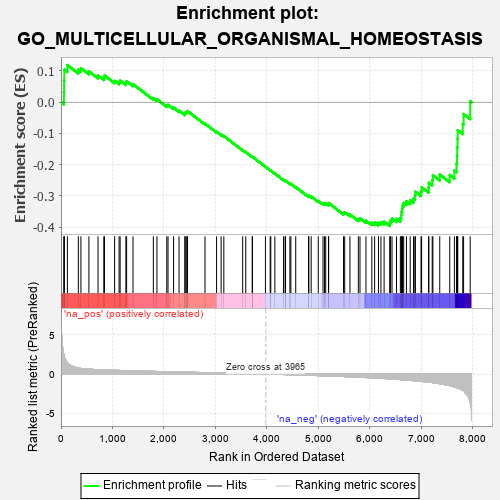
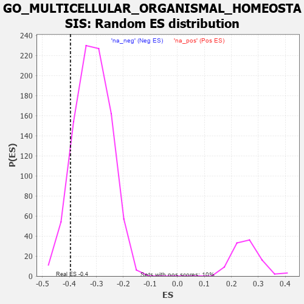

| | | Dataset | 7d |
| Phenotype | NoPhenotypeAvailable |
| Upregulated in class | na_neg |
| GeneSet | GO_MULTICELLULAR_ORGANISMAL_HOMEOSTASIS |
| Enrichment Score (ES) | -0.3960989 |
| Normalized Enrichment Score (NES) | -1.257861 |
| Nominal p-value | 0.103218645 |
| FDR q-value | 0.53052396 |
| FWER p-Value | 1.0 |
Table: GSEA Results Summary

Fig 1: Enrichment plot: GO_MULTICELLULAR_ORGANISMAL_HOMEOSTASIS
Profile of the Running ES Score & Positions of GeneSet Members on the Rank Ordered List
| PROBE | GENE SYMBOL | GENE_TITLE | RANK IN GENE LIST | RANK METRIC SCORE | RUNNING ES | CORE ENRICHMENT | | 1 | MC4R | | | 57 | 2.491 | 0.0316 | No |
| 2 | RAC2 | | | 60 | 2.442 | 0.0695 | No |
| 3 | PTH2R | | | 65 | 2.249 | 0.1041 | No |
| 4 | ADCY8 | | | 124 | 1.418 | 0.1189 | No |
| 5 | DLL1 | | | 337 | 0.760 | 0.1038 | No |
| 6 | BAX | | | 387 | 0.711 | 0.1087 | No |
| 7 | SRF | | | 542 | 0.615 | 0.0987 | No |
| 8 | ID1 | | | 719 | 0.555 | 0.0850 | No |
| 9 | LDB2 | | | 831 | 0.523 | 0.0791 | No |
| 10 | NRDC | | | 845 | 0.521 | 0.0856 | No |
| 11 | YAP1 | | | 1041 | 0.475 | 0.0682 | No |
| 12 | SRC | | | 1128 | 0.459 | 0.0645 | No |
| 13 | VPS54 | | | 1148 | 0.454 | 0.0692 | No |
| 14 | WDR36 | | | 1260 | 0.437 | 0.0619 | No |
| 15 | CNOT3 | | | 1274 | 0.435 | 0.0670 | No |
| 16 | DOCK7 | | | 1398 | 0.410 | 0.0578 | No |
| 17 | STRAP | | | 1793 | 0.339 | 0.0131 | No |
| 18 | TLE3 | | | 1863 | 0.325 | 0.0094 | No |
| 19 | IRF4 | | | 2054 | 0.298 | -0.0101 | No |
| 20 | KDM3A | | | 2078 | 0.294 | -0.0084 | No |
| 21 | SYK | | | 2186 | 0.278 | -0.0177 | No |
| 22 | KSR2 | | | 2292 | 0.261 | -0.0269 | No |
| 23 | BTBD9 | | | 2407 | 0.245 | -0.0376 | No |
| 24 | OMA1 | | | 2408 | 0.244 | -0.0338 | No |
| 25 | MET | | | 2430 | 0.240 | -0.0327 | No |
| 26 | KDM1A | | | 2447 | 0.237 | -0.0310 | No |
| 27 | PGAM5 | | | 2457 | 0.235 | -0.0285 | No |
| 28 | AQP3 | | | 2796 | 0.184 | -0.0686 | No |
| 29 | BSCL2 | | | 3021 | 0.146 | -0.0947 | No |
| 30 | GPX1 | | | 3109 | 0.135 | -0.1037 | No |
| 31 | GCNT2 | | | 3162 | 0.128 | -0.1083 | No |
| 32 | HDAC3 | | | 3528 | 0.072 | -0.1535 | No |
| 33 | TNS2 | | | 3588 | 0.062 | -0.1600 | No |
| 34 | NF1 | | | 3713 | 0.040 | -0.1751 | No |
| 35 | HSF1 | | | 3718 | 0.039 | -0.1750 | No |
| 36 | IGF1R | | | 3970 | -0.002 | -0.2069 | No |
| 37 | AMPD2 | | | 4062 | -0.017 | -0.2182 | No |
| 38 | CSF1 | | | 4074 | -0.019 | -0.2193 | No |
| 39 | WNK3 | | | 4153 | -0.034 | -0.2286 | No |
| 40 | TSHR | | | 4322 | -0.063 | -0.2490 | No |
| 41 | ADRB2 | | | 4352 | -0.068 | -0.2516 | No |
| 42 | ACADL | | | 4360 | -0.069 | -0.2514 | No |
| 43 | LAMC1 | | | 4445 | -0.084 | -0.2608 | No |
| 44 | ERCC6 | | | 4464 | -0.087 | -0.2617 | No |
| 45 | APC | | | 4558 | -0.107 | -0.2718 | No |
| 46 | PLCL2 | | | 4807 | -0.159 | -0.3009 | No |
| 47 | P2RX4 | | | 4813 | -0.161 | -0.2990 | No |
| 48 | GATM | | | 4858 | -0.168 | -0.3019 | No |
| 49 | PROM1 | | | 4996 | -0.197 | -0.3162 | No |
| 50 | DRD2 | | | 5088 | -0.221 | -0.3243 | No |
| 51 | NOVA2 | | | 5118 | -0.231 | -0.3244 | No |
| 52 | FLCN | | | 5140 | -0.235 | -0.3234 | No |
| 53 | SMO | | | 5195 | -0.247 | -0.3264 | No |
| 54 | NOVA1 | | | 5197 | -0.247 | -0.3227 | No |
| 55 | ACTN3 | | | 5486 | -0.315 | -0.3544 | No |
| 56 | FABP4 | | | 5509 | -0.322 | -0.3521 | No |
| 57 | CPT2 | | | 5611 | -0.348 | -0.3595 | No |
| 58 | CIB2 | | | 5774 | -0.398 | -0.3739 | No |
| 59 | BBS4 | | | 5806 | -0.407 | -0.3715 | No |
| 60 | STK11 | | | 5922 | -0.443 | -0.3792 | No |
| 61 | RAC1 | | | 6036 | -0.484 | -0.3859 | No |
| 62 | UBB | | | 6090 | -0.503 | -0.3848 | No |
| 63 | EGR1 | | | 6165 | -0.527 | -0.3860 | No |
| 64 | LCA5 | | | 6213 | -0.540 | -0.3835 | No |
| 65 | STK39 | | | 6274 | -0.563 | -0.3824 | No |
| 66 | BBS2 | | | 6383 | -0.608 | -0.3866 | Yes |
| 67 | BBS1 | | | 6397 | -0.616 | -0.3787 | Yes |
| 68 | CSK | | | 6428 | -0.630 | -0.3726 | Yes |
| 69 | TRPV4 | | | 6515 | -0.668 | -0.3731 | Yes |
| 70 | ALMS1 | | | 6590 | -0.704 | -0.3715 | Yes |
| 71 | MKS1 | | | 6607 | -0.715 | -0.3624 | Yes |
| 72 | TUB | | | 6611 | -0.718 | -0.3516 | Yes |
| 73 | CUBN | | | 6624 | -0.727 | -0.3417 | Yes |
| 74 | WWTR1 | | | 6631 | -0.729 | -0.3311 | Yes |
| 75 | USH1G | | | 6654 | -0.740 | -0.3224 | Yes |
| 76 | EGFR | | | 6708 | -0.765 | -0.3172 | Yes |
| 77 | TRPM8 | | | 6781 | -0.800 | -0.3138 | Yes |
| 78 | PTH1R | | | 6845 | -0.839 | -0.3087 | Yes |
| 79 | ABCA4 | | | 6872 | -0.851 | -0.2987 | Yes |
| 80 | IQCB1 | | | 6882 | -0.856 | -0.2865 | Yes |
| 81 | NPHP4 | | | 6991 | -0.931 | -0.2857 | Yes |
| 82 | CCR2 | | | 7003 | -0.939 | -0.2724 | Yes |
| 83 | WHRN | | | 7139 | -1.025 | -0.2736 | Yes |
| 84 | CFTR | | | 7143 | -1.030 | -0.2579 | Yes |
| 85 | MFN2 | | | 7208 | -1.081 | -0.2491 | Yes |
| 86 | CNGB1 | | | 7222 | -1.096 | -0.2337 | Yes |
| 87 | PLAC8 | | | 7355 | -1.223 | -0.2314 | Yes |
| 88 | LAMA2 | | | 7549 | -1.468 | -0.2329 | Yes |
| 89 | CROCC | | | 7639 | -1.628 | -0.2188 | Yes |
| 90 | TRPM2 | | | 7680 | -1.712 | -0.1972 | Yes |
| 91 | MDM1 | | | 7691 | -1.742 | -0.1713 | Yes |
| 92 | ADCY1 | | | 7695 | -1.752 | -0.1443 | Yes |
| 93 | RHAG | | | 7701 | -1.769 | -0.1173 | Yes |
| 94 | ADCY9 | | | 7704 | -1.783 | -0.0897 | Yes |
| 95 | MUC2 | | | 7802 | -2.066 | -0.0698 | Yes |
| 96 | TRAF6 | | | 7818 | -2.157 | -0.0380 | Yes |
| 97 | PASK | | | 7946 | -3.674 | 0.0032 | Yes |
Table: GSEA details [plain text format]

Fig 2: GO_MULTICELLULAR_ORGANISMAL_HOMEOSTASIS: Random ES distribution
Gene set null distribution of ES for GO_MULTICELLULAR_ORGANISMAL_HOMEOSTASIS